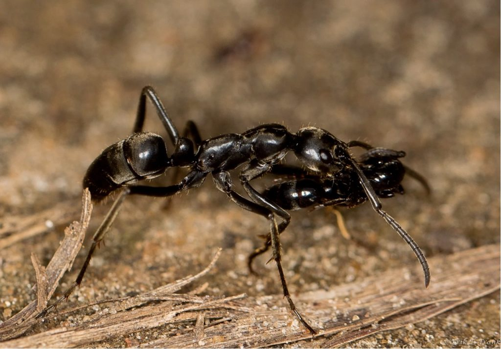

ခြတွေကို စားသုံးတဲ့ ပုရွက်ဆိတ် မျိုးစုဖြစ်တဲ့ မက်ဂါပိုနီရာ အနာလစ် (Megaponera analis) ပုရွက်ဆိတ်တွေရဲ့ အပြုအမူကို လေ့လာရင်း မထင်မှတ်ပဲ တွေ့ရှိခဲ့တာပါ။ ဒါဟာ လူကလွဲလို့ မျိုးနွယ်တူ အချင်းချင်း ရှေးဦးသူနာပြုစု ကုသမှုပေးတဲ့ ပထမဆုံးသော သက်ရှိမျိုးနွယ်ပဲ ဖြစ်ပါတယ်။
ဒီ ခြစာ;ပုရွက်ဆိတ်တွေဟာ အကောင်ရေ ၂၀၀ ကနေ ၆၀၀ လောက်ထိရှိတဲ့ ပုရွက်ဆိတ် တပ်ဖွဲ့တွေ ဖွဲ့စည်းပြီး ခြတွေနေထိုင်တဲ့ ခြတောင်ပို့တွေကို စီးနင်းတိုက်ခိုက်ကြပါတယ်။ တောင်ပို့ထဲက ခြတွေကို ဖမ်းယူပြီး ပုရွက်ဆိတ်တွင်းထဲကို သယ်ဆောင်ကာ စားသုံးကြပါတယ်။
ဒါပေမယ့် လွယ်လွယ်ကူကူ ဖမ်းလို့ရတာတော့ မဟုတ်ပါဘူး။ ခြတွေကလဲ ဒီလို ကျူးကျော်လာတဲ့ ပြည်ပရန်သူ ပုရွက်ဆိတ်တွေကို အနိုင်မခံ အရှုံးမပေးပဲ ပြန်လှန်တိုက်ခိုက်ကြပါတယ်။ ခြတွေရဲ့ မေးရိုးတွေဟာ အလွန်အားကောင်းတဲ့ အတွက်ကြောင့်မို့လို့ တိုက်ပွဲမှာ ပုရွက်ဆိတ် အများအပြား ခြေလက်တွေပြတ်တောက်ပြီး အချို့လဲ အသက်ဆုံးရှုံးရ တတ်ပါတယ်။

ဒီလိုတိုက်ပွဲမှာ ထိခိုက်ဒါဏ်ရာရတဲ့ ပုရွက်ဆိတ်တွေကို အခြား ပုရွက်ဆိတ်တွေက ပုရွက်တွင်းထဲကို ပြန်ပြီး သယ်ဆောင်သွားကြတာကို ဒီအဖွဲ့က တွေ့ရှိခဲ့ပါတယ်။ ဒါဏ်ရာရတဲ့ ပုရွက်ဆိတ်တွေဟာ အကူအညီတောင်းတဲ့ ဖီရိုမုန်းတွေ ထုတ်လွှတ်ပေးပြီး ဒီဖီရိုမုန်းတွေကို အနံခံမိတဲ့ အခြားပုရွက်ဆိတ်တွေက ဒီဒါဏ်ရာရ ပုရွက်ဆိတ်တွေကို တွင်းထဲ ပြန်သယ်သွားကြတာပါ။
ဒါနဲ့ သုတေသီအဖွဲ့ဟာ တွင်းထဲမှာ ဒီပုရွက်ဆိတ်တွေ ဘာဆက်ဖြစ်လဲ သိချင်ဒါနဲ့ တွင်းထဲကို တီဗီကင်မရာတွေ ထည့်ပြီး ရိုက်ကူးခဲ့ ကြပါတယ် (အောက်က ဗီဒီယိုမှာ ကြည့်ပါ)။ ဒီအခါမှာ ဒီဒါဏ်ရာရတဲ့ ပုရွက်ဆိတ်တွေကို အခြားပုရွက်ဆိတ်တွေက ဒါဏ်ရာကို လျှာနဲ့လျှက်ပြီး ကုသမှု ပေးကြတာကို တွေ့ရှိခဲ့ ကြပါတယ်။
ဒါနဲ့ သိပ္ပံပညာရှင်တွေဟာ ဒါဏ်ရာရတဲ့ ပုရွက်ဆိတ် အချို့ကို သီးသန့်ဖယ်ထားပြီး ကုသမှုမရအောင် ထိန်းချုပ်ပြီး ကုသမှုခံရတဲ့ ပုရွက်ဆိတ်တွေနဲ့ နှိုင်းယှဉ်ကြည့်ခဲ့ ကြပါတယ်။ ကုသမှု မရတဲ့ ပုရွက်ဆိတ်တွေရဲ့ ၈၀% ဟာ သေဆုံးကုန်ကြပြီး ကုသမှုခံရတဲ့ ပုရွက်ဆိတ်တွေရဲ့ ၉၀% ကတော့ အသက်ရှင်သန်ကြတာကို တွေ့ရှိခဲ့ ရပါတယ်။
ဒီလို ဒါဏ်ရာရ ပုရွက်တွေကို ပြန်သယ်ဆောင်ပြီး ကုသမှုပေးတဲ့ အလေ့ဟာ သနားကြင်နာမှုကြောင့်တော့ ဟုတ်ဟန်မတူဘူးလို့ ပညာရှင်အဖွဲ့က ပြောပါတယ်။ ဒါဟာ ပုရွက်ဆိတ်တွေရဲ့ အသက်ရှင်သန်မှု လိုအပ်ချက်ကြောင့် ဖြစ်လာတဲ့ အမူအကျင့်လို့ ယူဆရပါတယ်။
ပုရွက်တွင်းထဲက ပုရွက်တွေရဲ့ ၃ ပုံ ၁ ပုံလောက်က ခြေတစ်ချောင်း နှစ်ချောင်း ပြတ်နေကြတာ ဆိုတော့ ဒီလိုမှ ပြန်သယ်ပြီး ကုသမှု မပေးရင် စစ်တိုက်ဖို့ ပုရွက်ဆိတ် စစ်သား ရှိတော့မှာ မဟုတ်တဲ့ အတွက် ဒီလိုကုသမှု ပေးတဲ့ အမူအကျင့် ဖြစ်လာတယ်လို့ ပညာရှင်တွေက ယူဆကြပါတယ်။
Source: New Scientist | Ants care for wounded comrades by licking their wounds clean